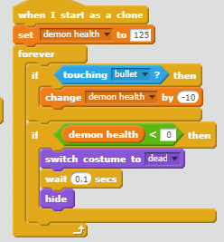
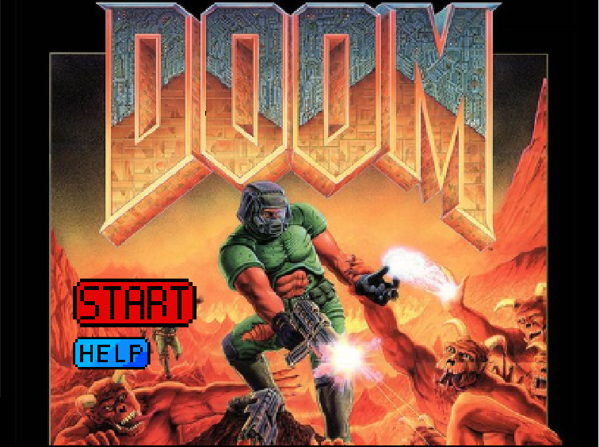
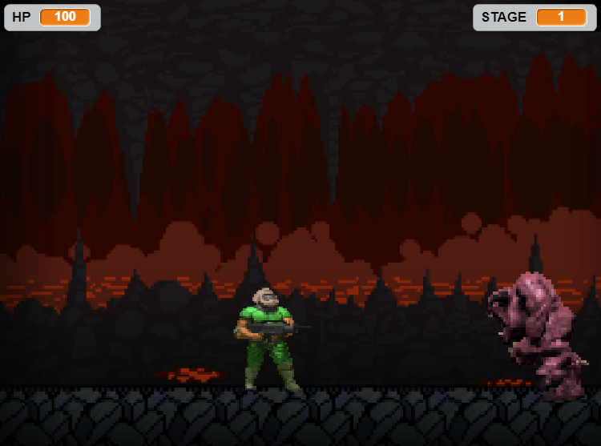
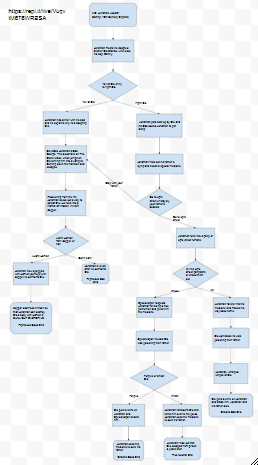

Game
Phantom BloodDoom Slayer
The story follows the main character, Doom Slayer, who must survive three rounds while massacring all the demons in your way. The score is the waves. The random factor that was implemented was the time interval and amount the demons are spawned. The game's difficulty increases as the wave increases, with more demons spawning We created this game because it was the first idea we had. The inspiration was Doom. Two successful points in development was the creation of the "spawn" code and the shooting code. Two obsticles were figuring out the shooting and platform, which was cut. More time we would add a boss and platforms, in general making a deeper and more entertaining experience. Possibly more weapons, buffs, and heals.
This is an algorithm because its an execution of code in a designated order using ifs. This was integeral too the gone because it was the shooting system making the demon sprite dissapear when the bullet sprite touches it.
Home Screen
In Game
Play Now
Phantom Blood
In 19th-century England, a youth named Dio Brando is adopted by the wealthy George Joestar to repay Dio's father for seemingly saving his life. Jonathan Joestar, who aspires to become a gentleman, finds himself shunned by his family and friends as part of Dio's plot to take the Joestar fortune for himself.
My partner and I based our game's story and title on Hirohiko Araki's JoJo Bizzare Adventures Part 1 Phantom Blood. It was more of a fanfic and a summary more than anything. We had altered some scenarios and removed some character for a more digestable game.The only problem we had was with python multiplayer not working. We solved this problem by having one partner write the code in Google Docs and the other copy and pasting the code onto python.
Organizing our scenes into function is a form of procedural abstraction because it lets the player decides which function will play out and in which order. The advantage of abstracting our story into function is that it gives the viewer more freedom but still lets us control the game to an extent.
One story form my classmates I enjoyed was Three of Swords. It had an intresting story and very diverse branching paths.